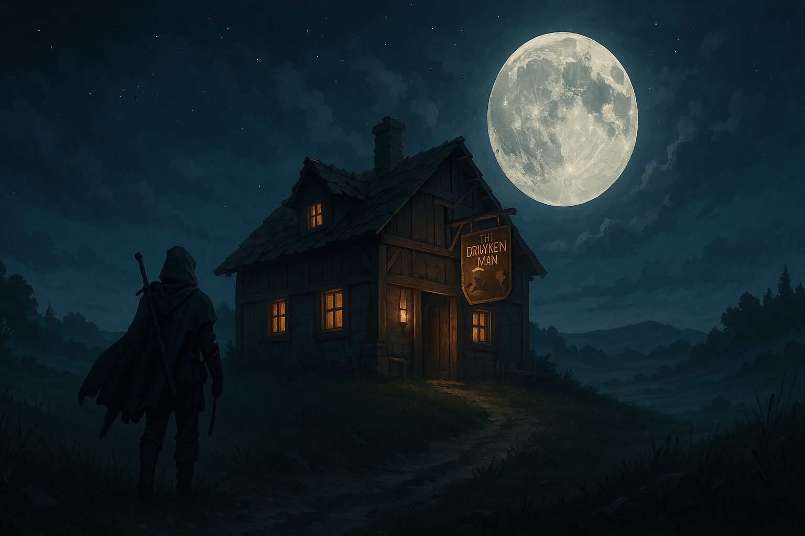

Chapter 2: Regroup and Reanalysis
Mattington Shattered

Mattington Shattered
15048.11.16
一早，睡醒的 Lemmy 走出了房間，便朝向從窗外望見的農田走去。廣袤的麥田，農夫的數量卻屈指可數。Lemmy 試圖和農夫打聲招呼，卻沒有得到回應。不久後，他感到些許無趣，便走回旅店門口，看見同行的夥伴們已在門口等待了。
隨著從 Lemmy 身後悠悠走來的 Siri 歸隊，Samael、YHWH、Midori、Beau、Lemmy 和 Siri 離開了旅社，朝向前一晚出發的城牆邊走去。此時早已整理完營帳的 Ron 正在打坐。大夥兒簡單討論後，決定先回到麥克嵩城內。Samael 想去找 Franz，而 YHWH 則是想去向 Mr. Moon 致意。
麥克嵩城門的衛兵無精打采，大家輕輕鬆鬆就走入了城內。已經熟悉麥克嵩主要幹道的台北市議員很快就回到 Patton’s。敲了敲門，Mr. Moon 邀請大家入內。
在辦公室內看見紫羅蘭，YHWH 打了打招呼，和紫羅蘭說明他的兒子 Paladin 爵士已和他們分道揚鑣，決定前往瑟巴諾尋找線索。同時，紫羅蘭也說明了他會等弗列里夫人更加康復後，和他們夫婦一同前往寇林菲爾德。在 YHWH 的請託下，紫羅蘭將頭上的髮簪取了下來，遞給 YHWH，希望能作為信物，讓台北市議員在麥丁頓王國旅行時可以少遇到點困難。
另一方面，Midori 看見有點不知所措的 Roline 默默站在 Ron 身後。Midori 前去鼓勵她。鼓足勇氣，Roline 從 Ron 的身後拍了拍他的肩膀，而就在 Ron 轉身面對她時，Ron 的嘴唇已被 Roline 的雙唇堵住。
此時並沒有飛鼠般的肉色幻影從背後天花板的角落瞬間移動。並沒有。
鬆開雙唇的 Roline 在 Ron 耳邊輕輕低語後，一回頭發現眾人都在看著她，便羞赧的跑走，留下 Ron 呆呆地站在原地。
Samael 向 Mr. Moon 告解，自己的父母是月神教的瘋狂信徒，因此讓他初次認識 Mr. Moon 時有極大的戒心。同時，YHWH 也向 Mr. Moon 詢問了關於月神教的問題，以及請他指點日後冒險時，遇到拉索斯教與崔尼斯教等大型宗教的干涉，該怎麼辦。Mr. Moon 表示宗教信仰是讓脆弱的人在需要幫助時，有個可以依靠的東西，只要足夠堅強，就算沒有信仰，也能撐過一切的。Mr. Moon 也分享了自己年輕時，和月神教做過的交易：雖然沒有說明自己換得了什麼，但目測年齡約 30 多歲的他，壽命其實已快到盡頭了，也許下次台北市議員回到麥克嵩時，Mr. Moon 已往生了也說不定。
接著，Mr. Moon 走到了儲物間，要拿點東西給台北市議員。在台北市議員討論拉索斯教的過程中，他們看見 Roline 從門外進來，手上拎了好多袋東西。接著，她便一一將剛買的沙威瑪分送給了冒險者們，讓他們填飽肚子。Mr. Moon 也從手上分送給了冒險者們每人一顆白色透光的小石頭，讓他們帶著，並表示當他們有需要時，便會知道該如何使用它，而月神芬尼爾會陪在他們身邊的。
台北市議員從 Mr. Moon 那裡打聽到 Franz 回到了先前他所住的 Brandon’s Corner。與 Mr. Moon 等人道別後，他們便出發前往位於 Edmond’s Diner 旁的 Brandon’s Corner。YHWH、Midori 和 Beau 決定先在 Edmond’s Diner 店內等待其他人，順便簡單休息一下。
Samael、Ron、Lemmy 和 Siri 等人來到了 Brandon’s Corner 的櫃檯，經過詢問後，發現現在只有一間客房有住人，同時他們也聽到了客房內傳來了陣陣琴聲。在櫃台人員敲了敲門後，門被打開了縫隙。一隻瞪大的眼看向了門外的 Samael。接著 Franz 將門大開，邀請大家趕緊進到房內，然後趕走了櫃檯人員。室內全暗，只有窗外圍光照射的房間內，Franz 的小書桌上放滿了潦草筆跡的字條，蓬頭垢面的他神經兮兮的和大家說明自己的發現，並拿出他漆成黑色的魯特琴，開始演奏。聽起來古怪弔詭的曲調，訴說著關於拉索斯教與暗影之父的故事。Franz 表示過去將他夥伴殺死的暗影之父也是那隻惡魔，不過似乎是從不同的人幻化而成。依他判斷，暗影之父應該會附身或幻化成不同的人。
經過討論後，Franz 表示自己想繼續追查暗影之父與拉索斯教的線索，因此想和台北市議員一起冒險。雖然 Franz 變得有些神經質，Samael、Ron、Lemmy 和 Siri 最終還是同意了，Lemmy 甚至將 Franz 視為兄弟。
五人離開了 Brandon’s Corner，回到 Edmond’s Diner 與 Midori 等人會面。用餐期間，Franz 和 Lemmy 表明自己花了些時間，學會了拉索斯語，並寫出了拉索斯語的「拉索斯」這個字，表示自己願意教 Lemmy 拉索斯語。
經過討論後，大家決定在飯後簡單分頭行動：Lemmy 和 Siri 要去麥克嵩的盜賊公會打探消息，其他人則想去看看有沒有租賃或購買馬車的可能性。大家約好要在日落前在城門前集合。
Lemmy 帶著 Siri 來到了麥克嵩的盜賊公會，尋找過去夥伴的蹤跡。公會一如往常，沒有任何人影。Lemmy 發現上回來到這裡看見的訊息消失了，取而代之的是一句連他也看不懂的盜賊語。在 Siri 嘗試解讀下，只能確認留下的是一個名字。Siri 發現 Lemmy 在公會內的好兄弟 Remmy 的置物處有被魔法操作過的痕跡，讓人有點起疑，不過 Lemmy 還是留給了 Remmy 訊息，表示自己現在的一些夥伴正前往瑟巴諾，希望 Remmy 有機會可以前去協助他們。最後，Lemmy 發現公會的傳話人 Whisperer 似乎不久前有在這裡活動的蹤跡，但卻不知去向。兩人到了 Lemmy 上次與 Whisperer 見面的雜貨店門口，卻沒有發現任何蹤跡，而雜貨店似乎也已經幾週沒有人活動了。
離開雜貨店後，Lemmy 和 Siri 回到 Lemmy 在貧民窟的家，看見停在門口的勇哥十分虛弱，似乎是脫水了。Lemmy 想尋找附近的水源，Siri 卻突然跑走了。附近的水井似乎是乾的，而且好像通往了地底下；附近的民宅內幾乎都空了，而且都沒有水可以用。不久後，Siri 提了一大桶水走了過來，是他到附近的店購買的。給勇哥喝水之後，兩人便牽著勇哥，往約定好的城門口走去。
Midori 和 YHWH 帶著 Beau 去拜訪 Dr. David。來到了他的診間，裡頭全是麥克嵩的傷者。Dr. David 和 Beau 似乎早已認識，讓 Midori 有點小訝異。Midori 進了 Dr. David 的辦公室，想和他詢問關於 Beau 的事，同時也詢問看看能否讓 Beau 待在這裡。依照 Dr. David 的說法，Beau 的父母過去做過木工，賣過雜貨，簡單來說各種工作都做過，但是都做不久。Beau 雖然年紀小，但是卻十分配合他的父母。Midori 也簡單詢問了關於城內拉索斯教的影響力，Dr. David 則表示拉索斯教似乎是在近年才進入麥克嵩的。
辦公室外，Beau 在 Midori 的允諾下，在診間到處晃晃，而 YHWH 則在後面確認 Beau 沒有在搗蛋。出其不意的，Beau 和診間內的家庭、小朋友，似乎都熟識，而且大家對他態度都很好。Beau 陪著其他受傷的小朋友玩耍、扮鬼臉，連 YHWH 都加入，陪 Beau 一起玩。
在 Midori 和 Dr. David 詢問結束後，Midori 似乎感應到了他的神，津菈。他體內的聲音允諾他一個小小的願望，而 Midori 則默默許下，希望 Beau 可以平安長大。與診間內的傷者們以及 Dr. David 道別後，Midori、YHWH 和 Beau 一同離開，準備往城門走去。
Samael、Ron 和 Franz 三人經過打聽後，到了城門邊尋找可以租用或購買馬車的地方。依照打聽到的內容，他們知道要找最破舊的店家：Kerry’s，最為划算。經過實際探查後，三人決定向 Kerry’s 的老闆 Larry 購買適合一家人乘坐的雙頭馬車以及一批馬，Speedy（另外一批馬可以用 Lemmy 騎來的勇哥或是 Midori 召喚的坐騎連番使用）。老闆也另外贈送了他們兩匹馬各一週份量的草料，讓馬兒不會餓肚子。
因為時間還早，在 Franz 的請求下，Samael 和 Ron 帶他到了傳說中的小黑屋。Franz 從口袋中掏出了大把金幣，詢問了兩個人名：Schwarz 和 Dario 的所在之處。令 Samael 和 Ron 意外的，他們並沒有聽到任何回應，Franz 卻點了點頭道謝，然後準備離開。在 Franz 的說明下，他過去的冒險團 Shadow Trackers 四人中，除了被殺死的 Nebalon 以及他自己以外，剩下的兩名：Schwarz 和 Dario 都藏匿了起來，但是他想要去找他們兩人，挖掘一些關於拉索斯與暗影之父的消息。
大家在城門口見面後，決定讓 Lemmy 在餵食後，牽著虛弱的勇哥，其他人則坐上 Samael 駕的馬車，往南方前進。Ron 則決定坐在馬車頂打坐乘涼。
在路程中，Franz 也更加詳細的說明自己過去冒險團的故事。最早人類 Nebalon the Justice 是拉索斯的信徒，卻在發現拉索斯教的邪惡後，決定背棄它。Nebalon 遇上了妖精 Schwarz the Heart，然後是 Franz the Blue，最後是半獸人 Dario the Force。Nebalon 也發現了 Franz 的慧根，而決定教他拉索斯語。四人尋覓拉索斯與暗影之父的秘密，最終卻在一個妖精的部落內慘遭暗影之父襲擊：做法與麥克嵩相似，暗影之父喬裝成他們認識的人，最終化為惡魔，而 Nebalon 被暗影之父撕開了四肢，再也醒不來了。在那之後，Schwartz 和 Dario 都決定隱姓埋名，逃得遠遠的，只剩 Franz 繼續找尋拉索斯的秘密。
往麥克嵩西南方的城鎮 Dorrenville 市中心大約需要一小時的時間。為了配合虛弱的勇哥，馬車以步行的速度前進，夜色也漸漸黑去，雨也開始落下。在大家停下馬匹討論後，決定趕緊往前，市中心也已經不遠了。
來到了 Dorrenville 的街道上，YHWH 向路人詢問適合夜宿的地方，得到了一個叫 Circus 的店名。然而，為了躲雨，大家到了附近最近的酒館便停了下來。走入 The Drunk Man，裡面人不多，花了點時間和老闆殺價後，大家有了個大通鋪可以過夜。和老闆詢問後，因為覺得餐點太貴，最終只有 Lemmy、Franz 和 Beau 等人留下來用餐，其他幾人則在街上找了間看起來生意比較好的店家吃飯。
用餐期間，YHWH 也向 Midori 詢問了關於接下來往方努爾市的路。Midori 簡單說明，向南方前進後，會到一個叫 New Morris 的城市，他們會一起下馬車，坐船前往方努爾市。
為了保護花了大筆錢買的馬車和 Speedy，眾人決定在人手充足的條件下安排一次兩人進行守夜。
首先，Ron 和 YHWH 兩人坐在馬車上閒聊著，探索著 Speedy 其實是隻由德魯伊變身成的馬的可能性，以及德魯伊的市價等。一段時間後，Ron 發現酒館對街似乎讓他感到不太對勁。Ron 和 YHWH 決定前去調查。此時，Ron 的腦中傳來的極高頻的短暫刺耳聲，但是找不到來源。來到了對街房屋前的草皮，Ron 透過 YHWH 升起的篝火，找到了一顆表面凹凸不平，像是金屬的礦石。兩人並不清楚這顆石頭是什麼來歷，保險起見，先收到 bag of holding 去，明天再問問團隊中「肯定」對礦石十分了解的 Siri。
15048.11.17
守夜結束後，YHWH 大辣辣的走回房門口敲門，吵醒了剛入睡不久的夥伴們，惹得大家小小的不悅。Midori 帶著對守夜十分期待的 Beau，跟著似乎對 Midori 有話要說的 Lemmy 一起來到了馬車旁。在剛才 Ron 與 YHWH 的告知下，他們也到了對街找到奇怪礦石角落調查了一下。此時，Midori 的頭感到有點刺痛。Lemmy 也向 Midori 談起了那晚 Anedak 和 Jiaheng 被殺害的情形。在保留關鍵的家族名稱之餘，Lemmy 近乎完全坦誠的告訴了 Midori 完整的事件經過（而一旁的 Beau 感到沒什麼興趣）。回到了馬車旁，Lemmy 也告訴了 Midori 在那之後，每晚他都必須回報當天他發生了什麼事情，並親自示範了一遍。此時，Beau 突然發現 Midori 的左手前臂怪怪的，Midori 仔細一看，發現自己雙手的手臂都成了深黑色如象皮般的模樣，上頭長著粗短的硬毛，就如當時 Brock 的皮膚一樣。
Midori 握起雙手，閉上雙眼，向津菈禱告。在聆聽津菈的回應時，突然「嘣」聲巨響。Midori 聽到 Beau 尖叫。Midori 感到左手劇烈刺痛。Midori 沒有聽到任何來自 Lemmy 的聲音。
睜開雙眼，Midori 看見 Beau 的右手從肩膀以下整個消失，自己的左手則是從手肘以下都消失了，兩人的傷口卻像是被癒合一般，雖然劇烈陣痛，卻沒有血肉模糊的慘狀。Midori 的右手手掌也像是無法施力一般，垂了下來。Lemmy 則不見了，只留下了地上散落的肉塊、曾經穿在他身上的布料，以及那串曾經掛在 Tai Tai 我還要、Uko，以及他自己脖子上的項鍊。
在 Lemmy 的意識消失前的最後一刻，他回想起了和這群夥伴們冒險的過往，以及從小在麥克嵩生活的點滴，與好兄弟 Remmy 認識的過程等。然後，Lemmy 聽見了熟悉的 Remmy 的聲音。「LaShiv da Macksohn，跟我走吧！」接著什麼都沒有了。
爆炸的聲響以及 Beau 淒慘的尖叫聲響遍了 Dorrenville，附近所有住戶都跑出來遠觀。冒險者們也都驚醒，跑了出來。受到極度驚嚇的 Beau 完全說不出話，跪在地上，瘋狂地用頭敲地面。在請酒館老闆去找醫生後，YHWH（拿了 Lemmy 留下的項鍊，掛在自己脖子上。他似乎感受到這條項鍊有著和他所信奉的詐欺之神 Ultisen 有所相關）陪同 Midori 以及抱著似乎是累到昏去的 Beau 的 Franz，先回房間內休息。Ron 和 Siri 以及帶著酷爆出來的 Samael 陷入了震驚，思索著該怎麼做。Samael 先將酷爆留在馬車旁，並與兩位夥伴來到酒館門口。幾位住在酒館的旅客也倉皇跑了出來，想搞清楚發生什麼事。
不久後，三人聽見了激烈的馬叫聲，然後一個陌生的身影騎著 Speedy 從酒館的轉角快速衝了出來。機警的三人趕緊用盡了各種方法，連哄帶騙、連滾帶爬地將這名竊馬賊以及 Speedy 制止住了，並分工合作的把 Speedy 牽回酒館旁。Ron 嘗試和竊馬賊問話，對方卻似乎在中了 Siri 的法術狂笑不止後喘不過氣，無法回話。
Samael 將 Speedy 牽回酒館旁時，看見了酷爆正在啃食地上原本是 Lemmy 的肉塊。Samael 氣得鬆開原本牽著 Speedy 的韁繩，要去把酷爆抱起來。Speedy 見狀，想往前衝去，嚇到了滿嘴肉塊的酷爆，酷爆轉頭向後跑，撞到了神情疲憊不已的勇哥，勇哥也只有苦苦低鳴一聲的力氣。Siri 趕緊抓住 Speedy 的韁繩，帶到酒館旁綁好，Samael 也將酷爆抱起，以免他再吃更多肉塊。此時，Samael 從窗戶外聽見了他們住的房間內，似乎傳來了一陣歌聲，讓他回想起了家鄉，歌詞的語言有點熟悉，卻又似乎不是妖精語。
一陣混亂之後，酒館的門打開了，老闆和 Ron 告知醫生來了，眾人便趕緊趕回房內。
在 Midori、YHWH 和 Franz 與 Beau 回到房間後，YHWH 和 Midori 討論著接下來該怎麼辦。Midori 計畫著在醫生將他與 Beau 穩定下來後，再繼續前往方努爾市。Franz 在一旁聽了，大為憤怒，表示今天陷入了這樣的危險，Beau 被炸斷了一隻手，再繼續這樣闖下去，要是再斷一條腿，說不定到方努爾市時，Beau 的四肢都早就都沒了。Midori 要 Franz 提出有用的建議，Franz 來回踱步，也想不出好方法，一氣之下，便離開了房間。
不久後，他們聽見了敲門聲。酒館老闆帶了一個人來到了房間。此人全身膚色蒼白，頭髮也是銀白色的，就連衣服也是一身白，唯有他的雙眼是碧藍色的。這位外觀看起來二十初頭的女子自我介紹是 Dr. White，算是 Dorrenville 當地的醫生。在 Midori 的請託下，Dr. White 先檢查了已經睡去的 Beau，而他似乎也一看就判斷出了這是拉索斯教搞的鬼。YHWH 起身要去告訴其他夥伴醫生來了，老闆則自告奮勇接下這個任務。Dr. White 坐在 Beau 身邊，唱起了哥。歌聲十分溫和舒緩，讓 Midori 也感到放鬆許多。
Samael、Ron 和 Siri 走回了房間門口，看見那名陌生的女子，也聽見了他的歌聲。Samael 開口詢問對方是誰，女子先是用了普通語，告訴大家他叫 Dr. White，接著用了妖精語，對著 Samael 說了一句「歡迎回家」，接著便是一陣刺眼的白光，還有 Ron 的大聲嘶吼「這種會唱歌的女生，我就知道一定怪怪的！」，充斥著整個房間。Siri 努力靠著自己的意志抗拒這未知的魔法。在他睜開雙眼時，發現整個房間只剩下他一個人。房門又被打開了，Franz 走了進來，露出狐疑的眼神，問了一句「人呢？怎麼都不見了？」。